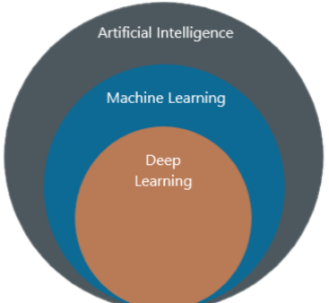
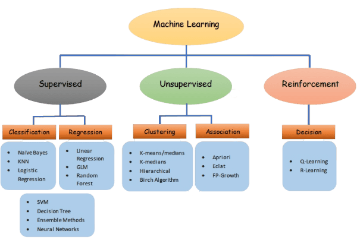
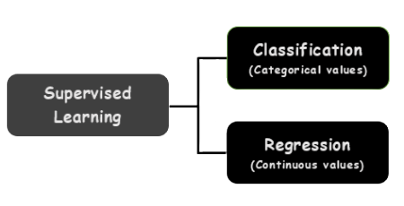
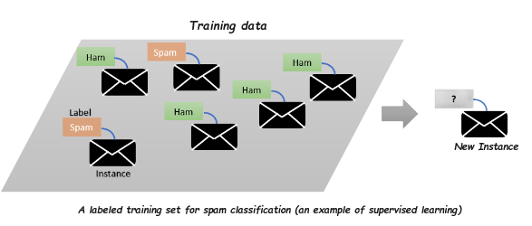
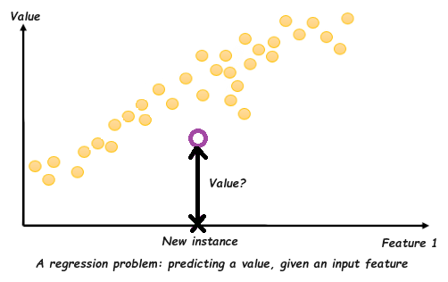
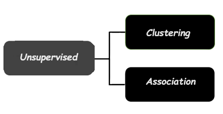
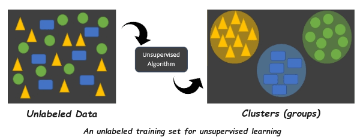
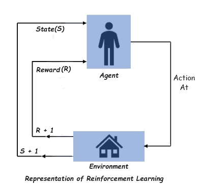
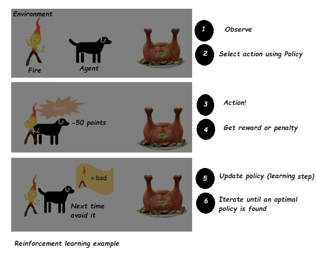
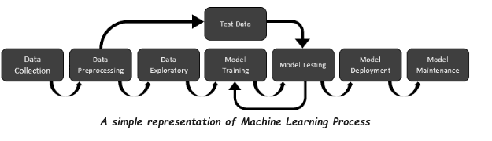

What is Machine Learning?
Machine Learning is suset of Artificial Intelligence (AI) that gives computers the ability to learn from past experience and improve their performance over time without being explicitly programmed.
Examples of Machine Learning
Image Classification using Convolutional Neural Network (CNN)
E.g. Detecting tumors in brain scans: each pixel in the the image is classified (as we want to determine the exact location and shape of tumors), typically using CNNs.
Text Classification using Natural Language Processing (NLP)
E.g. Classifying news articles, creating a chatbot or a personal assistant, Spam/Ham detection.
Speech Recognition
E.g. Siri, Alexa are examples of speech recognition, which requires processing audio samples: since they are long and complex sequences, they are typically processed using RNNs, CNNs or Transformers.
Fraud Detection
E.g. Detecting Credit card fraud
Traffic prediction
Types of Machine Learning systems
Machine Learning systems can broadly be classified into Supervised learning, Unsupervised learning, and Reinforcement learning.
Supervised learning
In supervised learning, machines are trained using "labelled" training data which means that the input data is paired with the desired output.
It consist of target value (dependent variable), such as the price of a car, which is to be predicted from a given set of features (mileage, age, brand, etc.) called predictors (Independent variable).
Supervised learning is again divided into two categories:

Classification algorithms are used to predict/Classify the discrete values such as Male or Female, True or False, Spam or Not Spam, etc. 
One of the supervised learning task is classification. The spam filter is a good example; the training data consist of many emails along with their class (spam or ham) and it must learn how to classify new emails.
Regression algorithms are used to predict the continuous values such as price, salary, age, etc.

Another typical task is to predict a target numeric value, such as a price of a car , given a set of features called predictors. This sort of task is called regression.
Here are some of the most important supervised learning algorithms (we will cover in this course):
• Naive Bayes
• K-Nearest Neighbors
• Linear Regression
• Logistic Regression
• Support Vector Machines (SVMs)
• Decision Tree and Random Forests
Unsupervised learning
Unsupervised machine learning models are given unlabeled data and allowed to discover patterns without any explicit guidance or instruction.
The training data is unlabeled. We dont have target variables to predict i.e., the system tries to learn without a teacher.
In general, unsupervised learning is of two types:
Clustering is the task of grouping the data into clusters on the basis of similarity and dissimilarity between them.
Association learning is a method for discovering intersting relations between variables in large database.
For example, suppose you own a supermarket. Running an association rule on your sales logs may reveal that people who purchase bread and butter also tend to to buy milk. Thus =, you may want to place these items close to one another.
Dimensionality reduction is also one of the task to simplify the data without losing too much information. One way to do this is to merge several correlated feature into one.
For example, a car's mileage may be strongly correlated with its age, so the dimensionality reddution algorithm will merge them into one feature that represents the car's wear and tear. This is called feature extraction.
Here are some of the most important unsupervised learning algorithms:
• Custering
→ K-Means
→ Hierarchical Cluster Analysis (HCA)
• Association Rule Learning
→ Apriori
→ Eclat
→ FP-Growth
• Dimensionality reduction
→ Principal Componemt Analysis (PCA)
→ Kernel PCA
→ Natural Language Processing (NLP)
Reinforcement learning
The learning system, called an agent in this context, can observe the environment, select and perform actions, and get rewards in return (or penalties in the form of negative rewards).
Agent: An agent is something that acts in an environment. An agent can, for example, be a person, a robot, a dog, a worm, etc. The agent continues doing these three things (take action, change state/remain in the same state, and get feedback), and by doing these actions, he learns and explores the environment.
The agent learns that what actions lead to positive feedback or rewards and what actions lead to negative feedback penalty. As a positive reward, the agent gets a positive point, and as a penalty, it gets a negative point.
Environment: A situation in which an agent is present or surrounded by.
Action: Actions are the moves taken by an agent within the environment.
State: State is a situation returned by the environment after each action taken by the agent.
Reward: A feedback returned to the agent from the environment to evaluate the action of the agent.
Example Use case
Your pet (dog) acts as an agent that moves around the house, which is the environment. Here, the state refers to the dog’s position of sitting, which can be changed to walking (left or right) when you utter a particular word.
If pet walk towards left (a state), pet may get penalty and if pet transition to a second state (walk towards right), it gets a reward (food).
It must learn learn by itself what is the best strategy, called a policy, to get the most reward over time.
A policy defines what action the agent should choose when it is in a given situation.
Here, the policy allows agents to take action in a particular state and expect a better outcome.
Machine learning workflow
Data Collection: Gather relevant data from various sources and store it in a suitable format. It ensure data quality and integrity.
Data Preprocessing: Clean and preprocess data (handle missing values, outliers, etc.) then transform data into suitable formats (normalization, feature scaling). This phase is also resposible for split the data into training, validation, and testing sets.
Data Exploratory: Visualize and analyze data to understand patterns and relationships. It also perform statistical analysis and feature engineering.
Model Training: Choose a suitable machine learning algorithm based in the problem and data. It then train the selected model using the training data.
Model Testing: Run the test data through the model.
Model Deployment: Deploy the trained model in a suitable environment. Integrate with existing systems or applications.
Model Maintenance: Monitor model performance over time.
This workflow serves as a general framework, and the specific steps may vary depending on the project and requirements. Remember to iterate between steps, as machine learning is an iterative process.
This introductory guide has covered the basics, but there's more to explore! For a deeper dive, refer to additional resources such as books and online tutorials.
Now that we've covered the basic of machine learning, let's dive deeper into the first machine learning algorithm - linear regression.
Next »